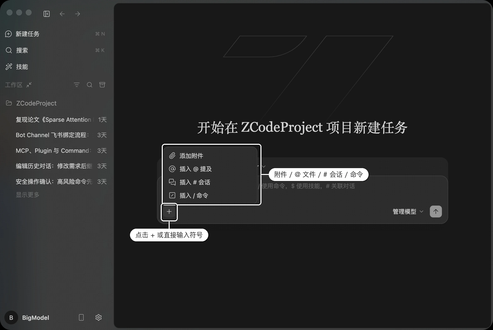
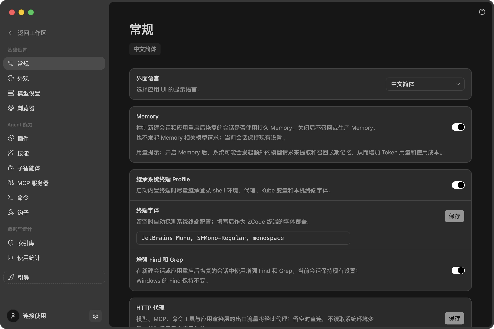
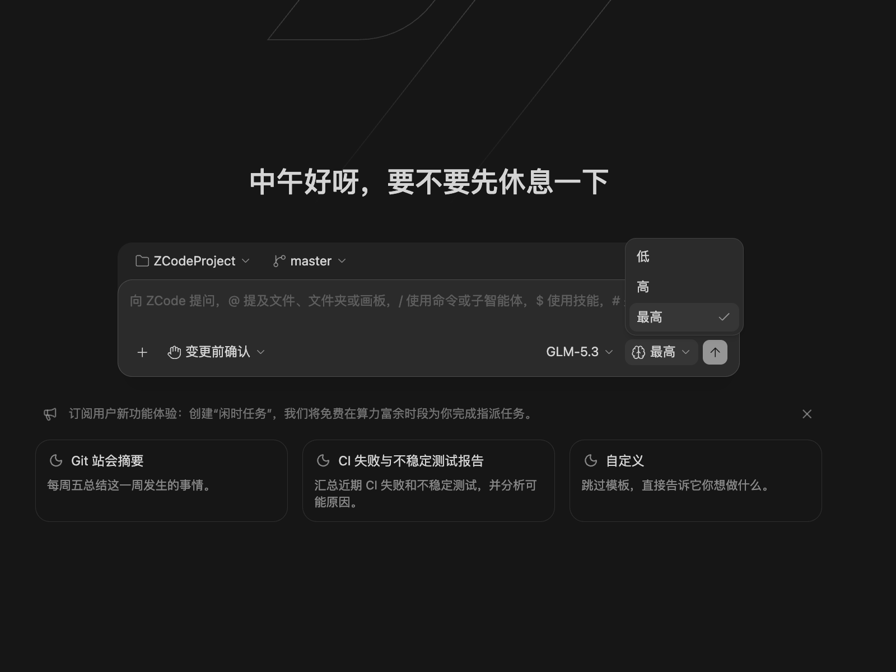

核心功能
Drora Agent
Drora Agent 是 Drora 的默认智能体，也是新建任务时最直接的提问入口。您可以在同一个工作台里提出需求、补充上下文、引用文件、调用命令，并选择适合当前任务的模型和执行模式。
作为 Drora 的核心智能体能力，Drora Agent 针对 GLM-5.3 系列模型 做了深度适配，在复杂项目理解、长任务规划、多轮上下文保持和连续代码修改上表现稳定。面对需要持续推进的 Long Horizon Task，Drora Agent 能更好地结合工作区状态、文件引用、执行模式和 Git 分支信息，把一次任务从需求理解推进到落地改动。
与 GLM-5.3 深度集成
GLM-5.3 的核心能力面向 长程任务（long-horizon tasks） 设计——重点不是单纯提升参数规模或常规编程跑分，而是解决长上下文、长链路、多轮工具调用和复杂工程任务中的 稳定执行 问题。模型侧的几个关键能力：
- 稳定的 1M 上下文 ：在 1M token 上下文中提供稳定的长任务执行能力，目标不是「塞进更多 token」，而是在真实 coding agent 轨迹中保持可靠执行。
- 更强的长程编码能力 ：在多个长任务基准上接近或超过部分闭源前沿模型，是当前表现最强的开源模型之一。
- 弹性推理强度（Flexible Effort） ：支持按任务难度在执行速度与计算成本之间权衡，复杂任务可释放更深的推理能力——对应 Drora 中的 推理强度 开关。
- 面向长上下文的架构优化 ：通过索引共享等机制降低长上下文计算开销，并优化推测解码，提高长任务生成效率。
- 面向 Agentic Coding 的强化训练 ：后训练覆盖长轨迹、多轮工具调用、子任务分解与多轮环境反馈，并引入防投机（anti-hack）机制，让模型面向真实工程任务，而不是只追求表面奖励。
Drora Agent 的深度联调，就是把这些模型能力转化为真实可用的编码体验：工作区理解与文件引用喂给模型高质量上下文， 执行模式 控制自主程度， 目标模式 提供长任务的目标管理、完成校验与状态恢复，让 GLM-5.3 训练出的长程能力在产品里被完整释放。
工作台入口
Drora Agent 直接理解 Drora 的工作区、任务列表、文件引用、模型选择、执行模式和 Git 分支状态，因此适合承担从需求理解到代码修改再到提交前检查的一整条开发链路。
使用 Drora Agent 时，可以在输入框中直接
@
引用文件，使用
/
调用命令，通过
$
调用技能，并在同一个任务里切换模型、执行模式和分支。对于日常开发任务，它通常是最稳定的首选入口。
不打开项目也能对话
有时候你只是想问个问题、让 Agent 帮忙算点东西或者起草一段文字，并不涉及某个代码仓库。这种情况不必先选文件夹：在输入框上方的工作区菜单里选择「不在项目中工作」，或者点侧栏「任务」分区右侧的新建按钮，就能直接开始对话。首次启动且没有可恢复的会话时，Drora 默认就是这个状态。
这类对话会归到侧栏的任务分区，和项目任务一样可以置顶、分组、归档和拖拽。
两点需要留意。这类对话里 Agent 创建的文件会留在磁盘上，关掉对话也不会自动清理，需要时请自己删。另外对话一旦发出就固定在这个模式里，想换成项目对话得新建一个。这个模式下也不显示 Git 分支选择器。
补充上下文
在聊天输入框左下角点击「+」，可以快速为当前任务补充上下文：上传附件、引用文件、关联历史对话或调用命令。你也可以直接在输入框中键入对应符号，触发相同的能力。

| 入口 | 触发符号 | 作用 |
|---|---|---|
| 添加附件 | — | 上传截图、文档、需求材料等文件，作为当前任务的上下文 |
| 插入 @ 提及 | @ |
引用工作区中的文件、文件夹、历史会话、画板或插件，让 Agent 精准定位到相关代码 |
| 插入 # 会话 | # |
关联历史对话，把已有任务的上下文带入当前任务 |
| 插入 / 命令 | / |
调用已保存的命令，快速复用固定提示词或流程 |
| 调用技能 | $ |
唤起技能面板；部分输入法产生的全角 ¥ / ￥ 也会触发同一面板 |
粘贴大段文字时不用担心刷屏——超过一定长度的内容会自动转成附件，输入框里只留一个附件条目，完整内容照样传给 Agent。
划选对话内容追问
对话里的任何一段文字都可以直接拿来当上下文。用鼠标选中助手回复、推理过程、代码或工具结果中的一段话，选区旁会浮出一个小工具条，点「添加到当前任务」，这段文字就会作为一条引用追加到输入框，和你已经写好的内容共存。
正在流式输出的回复也可以划选，点击的瞬间会把当时的文字固定下来。
引用的长度和条数有上限，超出时会直接提示，不会悄悄截断，已有的引用和草稿也不受影响。另外目前只支持单行选区，跨行拖选不会出现工具条。
项目指令文件
如果希望长期约束 Drora Agent 的行为，可以添加
AGENTS.md
指令文件。Drora
会在启动任务时读取该文件，并把其中的项目约定、编码规范、验证方式、注意事项等提供给 Agent。
Drora 当前读取两个来源：
| 来源 | 路径 / 查找方式 | 说明 |
|---|---|---|
| 用户全局指令 | ~/.drora/AGENTS.md |
适合写入跨项目通用的个人偏好、协作方式和常用约定。 |
| Workspace 指令 | 当前 Workspace 中的 AGENTS.md |
适合写入当前项目专属的工程约定。 |
如果两个来源都存在，Drora 会先拼接用户全局指令，再拼接工作区指令；工作区指令会被视为当前任务的主要项目来源。如果两个来源都不存在，则不会注入项目指令内容。
CLAUDE.md 不作为 Drora Agent 后续运行时持续读取的项目指令文件。对于已有 Claude Code 项目，Drora
只会在 onboarding 阶段做一次性迁移，将已有内容复制到
AGENTS.md
，迁移后以 AGENTS.md 为准。
项目指令文件适合写入稳定、可复用的团队约定，例如：
- 项目的技术栈、目录结构和关键模块说明。
- 代码风格、命名规范和提交前需要执行的验证命令。
- 对高风险文件、生产配置、权限操作的额外注意事项。
- 团队希望 Agent 遵守的协作方式，例如先给计划、少做无关重构、优先使用现有工具链。
项目记忆
AGENTS.md 需要你亲自维护， 项目记忆 则是让 Agent 自己积累。开启后，每当一轮任务顺利结束，Drora 会在后台把其中可复用的事实记下来，之后在这个项目里新建会话时自动带上——不用每次重新交代「这个项目用 pnpm」「测试要跑哪个命令」这类背景。
在「设置 → 记忆」里打开「工作区记忆」即可启用；桌面应用默认关闭，独立 CLI 默认启用。它和 AGENTS.md 是两回事，别混淆：
AGENTS.md |
项目记忆 | |
|---|---|---|
| 谁来写 | 你手写 | Agent 自动提炼 |
| 存在哪 | 项目仓库里，跟着代码走 | 只存在你本机，不进 Git |
| 适合什么 | 团队约定、编码规范这类需要评审和共享的规则 | 协作过程中积累的零散事实 |
使用前请了解三点：
- 会增加 Token 消耗。 积累和调用记忆都需要额外的模型请求。
- 开关只对新会话生效。 正在进行的对话保持原状。
- 记忆可以查看与删除。 桌面应用在「设置 → 记忆」提供已保存工作区记忆的查看器（仅本地桌面端可用）；你也可以在对话中直接让 Agent 忘掉某条记忆，或手动删除对应工作区的记忆文件。
项目记忆只在主对话里生效，子智能体不读也不写。完整说明见 Memory 记忆 。
执行模式
执行模式控制 Drora Agent 在修改文件、执行命令前的确认策略：是每步先确认、先出计划，还是尽量连续地完成任务。你可以根据任务风险、复杂度和是否需要持续介入，在不同模式之间快速切换。


共享运行配置默认采用 build 权限模式；独立 CLI 通过 --prompt 执行非交互任务时，未指定 --mode 会采用 yolo。交互会话、桌面会话、恢复的任务及宿主可使用各自配置、保存或传入的模式。
Drora Agent 当前的执行模式菜单包含以下模式，聊天输入框聚焦时可用
Ctrl+Shift+M
快速循环切换：
| 执行模式 | 工作方式 | 适用场景 |
|---|---|---|
| 变更前确认 | 每次修改文件或执行命令前都先询问确认，也是默认档位 | 关键代码、生产配置等高风险改动 |
| 自动编辑 | 自动编辑文件，命令等高风险操作仍需确认 | 常规迭代开发，希望减少编辑确认 |
| 计划模式 | 先检查代码并给出计划，确认后再开始编辑 | 需求复杂、步骤较多、希望先校准方案的任务 |
| 完全访问 | 编辑文件与执行命令时尽量减少确认次数 | 目标明确、风险较低、希望快速推进的任务 |
推理强度
推理强度（思考级别）控制模型在回答前投入多少深度思考：强度越高，思考越充分、结果通常越稳定，但响应也会相应变慢。在聊天输入框右下角、模型名称旁的思考图标处即可切换（快捷键
Ctrl+T
）——这也是 GLM-5.3 弹性推理强度（Flexible Effort）能力在产品中的直接入口。

以 GLM-5.3 为例，推理强度分为三档，默认为「最高」：
| 档位 | 工作方式 | 适用场景 |
|---|---|---|
| 低 | 使用较低的推理强度，优先提升响应速度 | 简单问答、明确的小修改，响应最快 |
| 高 | 以较深的思考深度处理任务，兼顾响应速度 | 常规开发任务，在速度与质量之间取得平衡 |
| 最高 | 以最深的思考深度处理任务（默认档位） | 复杂架构设计、疑难 Bug 排查、长任务推进等高难度场景 |
接入的其他模型（如 Claude、GPT 等）同样支持推理强度调节，可选档位随模型而定，按需在同一入口切换即可。
辅助对话
主任务正在推进时，你可能想问一句「这个函数是干嘛的」，又不希望打断它的思路。辅助对话就是为这种情况准备的：它在右侧边栏开一个独立的对话标签，与主对话并行，互不干扰。
打开方式
- 从划选进入 ：在主对话里选中一段文字，浮层上点「在辅助对话中提问」，这段文字会作为引用一并带过去。
- 快捷命令 ：在主对话输入框输入 /side 或 /btw，从命令菜单中选中后即可立即新建或打开辅助对话；两个命令作用相同，也不会作为消息发送。
- + 菜单 ：右侧边栏顶部的 + 里选「辅助对话」。
- 启动页 ：右侧边栏还没有任何标签时，空面板上也有这个入口。
快捷命令、+ 菜单和启动页入口不带引用，直接打开一个空白对话。+ 菜单和启动页入口在主任务正在运行、甚至卡在权限确认或反问时依然可用——主对话被挡住的时候，你仍然可以在旁边先问点别的。划选浮层则相反：主对话处于权限确认、反问或计划确认状态时不会出现。
它继承什么
辅助对话把主会话的历史作为模型上下文，所以你可以直接追问，不必重复交代背景。但界面上它从空白开始——时间线、搜索、翻页看到的都只是你在这里问过的内容。
它是一个功能完整的对话，能调用工具、修改文件、走权限确认，只是不继承主任务的目标、待发送队列和后台任务。
能力与数量限制
| 方面 | 说明 |
|---|---|
| 不支持的操作 | 目标模式、编辑重发、会话分叉 |
| 同一窗口 | 一个主任务同时只有一个辅助对话，再次点入口是回到原来那个 |
| 多个窗口 | 上面这条只在单个窗口内成立。开多个窗口时，同一个主任务在每个窗口里都可以有各自的辅助对话 |
| 平台 | 仅桌面端，手机端不提供入口 |
划选引用本身也有上限：单条引用的长度、引用条数和总字数都有限制，超出时会直接提示，不会悄悄截断，已有的引用和草稿也不受影响。目前只支持单行选区，跨行拖选不会出现浮层。
什么时候会关闭
辅助对话是临时的，这一点值得先了解清楚。
切换到别的任务再切回来，它还在，草稿和引用都保留。但关闭标签页、主任务被删除或归档、退出应用这几种情况下，它会连同内容一起关闭，并且 无法恢复 ——它不进入任务列表，也不进入「最近关闭」。
需要长期保留的讨论，开一个正式任务更合适。
会话分叉
想在某一步换个方向试试，又不想弄丢现在的进度，可以把会话分叉。
把鼠标移到一条已经回答完的助手消息上，点操作行里的「分叉」，Drora
会以这条消息为起点创建一个新任务，标题是
Fork of <原标题>
，任务行上带「从对话中派生」标记。新会话继承分叉点之前的对话历史、当时的模型与推理强度配置，以及目标模式的进度。
原会话完整保留，继续按原样运行。
需要留意的是：
- 只能从任务结束后的助手消息分叉。被中断的、失败的半截回复没有这个入口，用户消息和工具结果也没有。
- 分叉只影响对话历史，不会回滚磁盘上的文件。两个会话操作的是同一个工作区。
- 待发送队列、正在执行的工作和后台任务都不会被复制到新会话。
- 压缩进行中时无法分叉；找不到分叉点 checkpoint 时也无法分叉。
使用建议
- 先描述目标 ：在输入框里直接说明要实现、修复或分析的内容，让 Drora Agent 先建立任务目标；需要多轮迭代的长任务，可使用 目标模式 设定可校验的会话目标。
- 再补充上下文 ：使用 @ 引用关键文件，或通过附件补充截图、文档和需求材料。
- 用命令和技能提效 ：需要固定流程时使用 / 调用命令；需要复用能力时使用 $ 调用技能。
- 根据风险选择执行模式 ：普通编辑可用更高效的模式；涉及关键文件、命令执行或提交前检查时，使用计划模式先校准方案。
- 保持同一任务连续推进 ：同一个任务里可以持续追问、补充约束、查看改动并完成提交前确认，避免把上下文拆散。
下一步